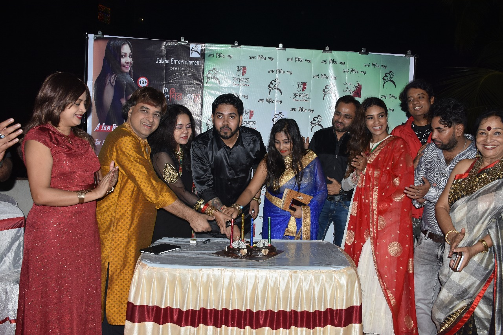
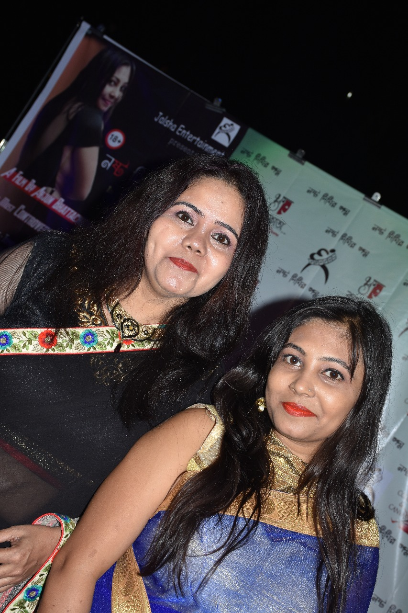
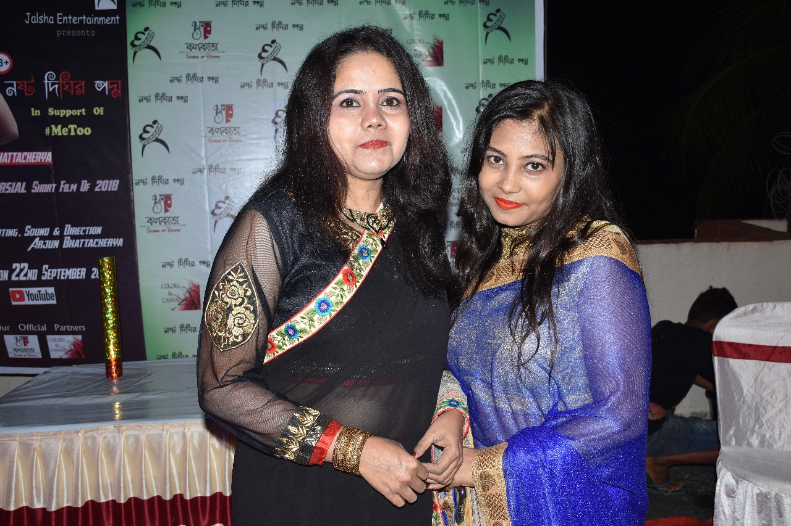
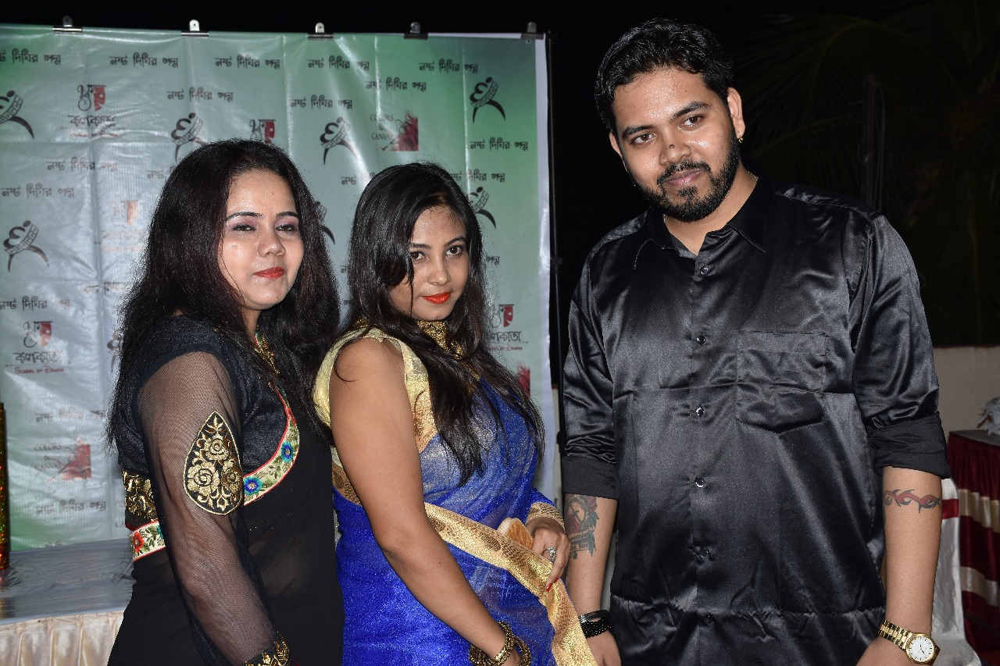

Posted at Date: November 08, 2018
Posted by : Rajen Biswas
নষ্ট দীঘির পদ্ম
অর্জুন পরিচালিত বহু চর্চিত বাংলা শর্ট ফিল্ম নষ্ট দীঘির পদ্ম-র সাকসেস পার্টি বেশ কয়েকদিন ধরে শর্ট ফিল্মের দুনিয়ায় আলোড়ন সৃষ্টি করে পরিচালক অর্জুন ভট্টাচার্য-র বহু চর্চিত বাংলা শর্ট ফিল্ম 'নষ্ট দীঘির পদ্ম'। সমালোচনাকে দূরে সরিয়ে এই ছবি গড়ে তুলেছে সাফলতার ইমারত। তাই এই সাফল্যকে স্মরণীয় করে তুলতে' নষ্ট দীঘির পদ্ম' ছবির পক্ষ থেকে আয়োজন করা হল এক সাকসেস পার্টির। সোমবার টালিগঞ্জে কলকাতা স্কুল অফ ড্রামায় আয়োজিত এই পার্টিতে উপস্থিত ছিলেন অভিনেতা যুধাজিৎ ব্যানার্জি, অভিনেত্রী মৌ বৈদ্য, প্রযোজক অশোক সুরানা, দক্ষিণী অভিনেতা মাণি, প্রখ্যাত তবলা বাদক পন্ডিত মল্লার ঘোষ, চিত্রশিল্পী সুব্রত গঙ্গোপাধ্যায়, অভিনেতা তথা পরিচালক নারায়ণ রায়, প্রসিদ্ধ ব্যাবসায়ী আজম মিয়ানুর সহ ছবির গোটা ইউনিট। ২২শে সেপ্টেম্বর ইউটিউবে রিলিজ হয় জলসা এন্টারটেনমেন্ট অ্যান্ড ফাইন আর্টস প্রযোজিত বাংলা শর্ট ফিল্ম 'নষ্ট দীঘির পদ্ম' । ৮মিনিট ২০সেকেন্ডের এ ছবি মূলত এক মেয়ের স্বপ্ন বাঁচিয়ে রাখার গল্প । অভিনেত্রী হওয়ার স্বপ্ন দেখত পদ্ম। সেই স্বপ্নকে বাঁচিয়ে রাখতে গ্রাম থেকে কলকাতায় আসে সে। দিতে থাকে অডিশন। কিন্তু প্রতিভার বদলে অডিশন চলে শুধুমাত্র তার শরীরের। প্রতিনিয়ত তাকে করতে হয় কম্প্রোমাইজ। শুধুমাত্র ফিল্ম ইন্ডাস্ট্রি নয় সে দেখতে পায় এই কম্প্রোমাইজের জাল ছড়িয়ে আছে সর্বত্র। মাত্রাতিরিক্ত যৌন শোষণে রক্তাক্ত হয়ে পড়লেও হাল ছাড়ে না পদ্ম। মনের মধ্যে জাগিয়ে রাখে একটা ব্রেক পাওয়ার স্বপ্ন। এদিকে জীবনের এই সত্যকে আড়ালে রেখে সামান্যতম রোজগার থেকেও পরিবারকে সে টাকা পাঠায় আর অন্যদিকে একটু একটু করে অভ্যস্ত হয়ে ওঠে শরীরী আপোষে । হার না মেনে এইভাবে চলতে থাকে পদ্মের জীবন যুদ্ধে স্বপ্ন বাঁচিয়ে রাখার লড়াই। সাহসী দৃশ্যের পাশাপাশি ছবিতে পদ্মের চরিত্রকে সুন্দরভাবে ফুটিয়ে তোলায় ইতিমধ্যে দর্শকদের মন জয় করেছেন অভিনেত্রী টুম্পা নায়েক।পরিচালক অর্জুনের কাহিনী, চিত্রনাট্য এবং নির্দেশনা একাধারে রীতিমত প্রশংসিত। এদিন অভিনেতা যুধাজিৎ ব্যানার্জি জানান, প্রত্যেকের কাজ সত্যি প্রশংসনীয়। আমি আশা করব এনারা আরো ভালো ভালো সিনেমা দর্শকদের উপহার দিক। ছবির সাফল্যকে ঘিরে রীতিমত উচ্ছাসিত পরিচালক সহ টিম 'নষ্ট দীঘির পদ্ম'।


